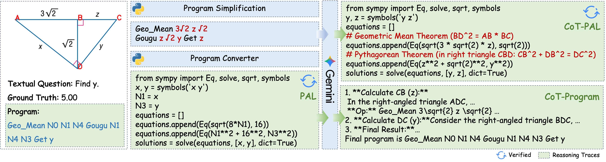
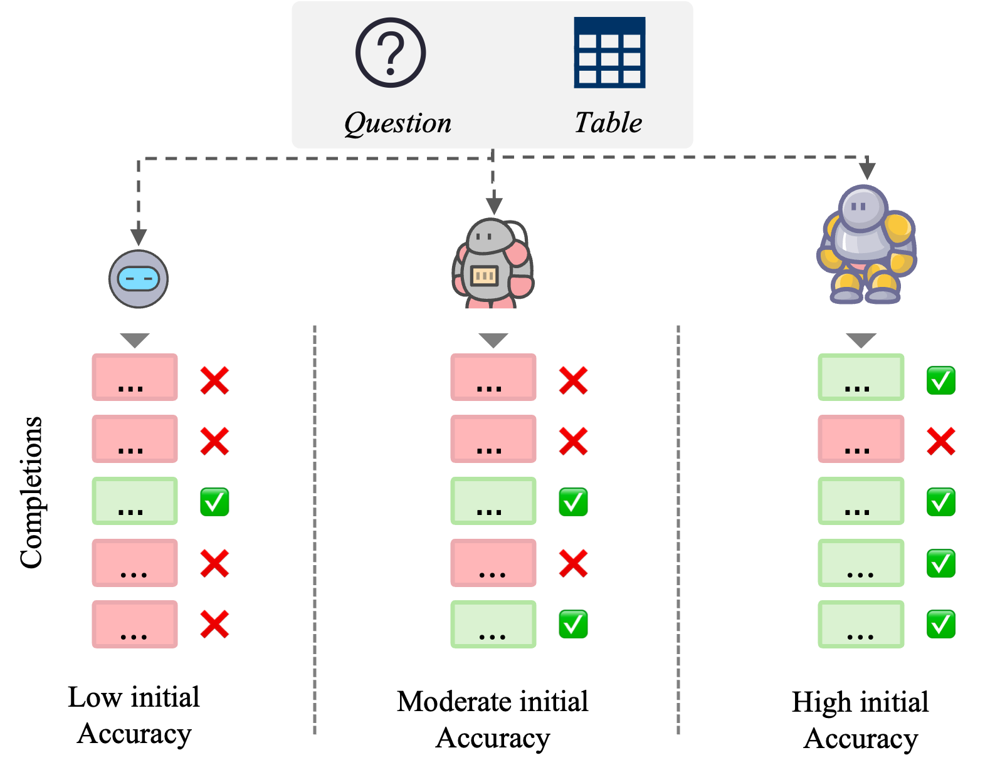
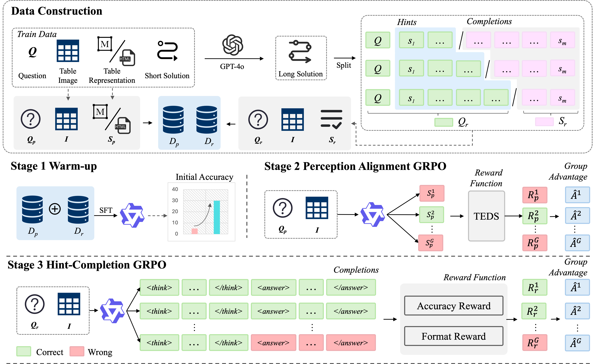

Models like GPT-4o and Qwen2-VL perform well on general tasks. But in plane geometry and complex table understanding, they still make many mistakes.
Requires precise visual perception of diagrams + multi-step symbolic reasoning. One wrong angle reading → wrong answer.
Tables have merged cells, hierarchical headers, dense numbers. Models must parse structure AND reason logically.
Key insight: The problem is not just the model architecture — it's also the quality of training data.
Existing datasets only provide one format — e.g., a symbolic program or a short final answer. This is too narrow for the model to learn from effectively.
→ Representation EnrichmentWhen we apply Reinforcement Learning, the model starts too weak. It can't generate correct answers, so it gets no useful reward signal — training stalls.
→ Initialization ShapingFor long reasoning chains, the model has to search a huge space of possible steps. Without constraints, it rarely finds the correct path.
→ Exploration BoundingThree shared data-side mechanisms:
Research question: Can structured data-side interventions systematically improve multimodal reasoning in specialized domains?
Multi-View Trace Synthesis for Plane Geometry
Given a geometry diagram + question, the model must reason step-by-step to find the answer.
Example Problem:
📐 Given: AC⊥BD at B, AD⊥CD at D,
AB = , DB = . Find DC (= y).
Key steps: Geometric Mean Theorem → BD²=AB×CB
Then Pythagorean Theorem in △BDC → DC = y
Problem instance = (D, Q, S, P, A)
Dataset: PGPS9K — 9K geometry problems with diagrams
Traditional DSL (Domain-Specific Language):
❌ Hard to verify by running code
❌ Doesn't use model's Python/NL knowledge
❌ Only one rigid format
What we want instead:
Our solution: synthesize 4 complementary formats from the same DSL program
PROGRAM (original)
The raw DSL steps. Kept as one of the four formats to preserve symbolic reasoning style.
PAL (synthesized)
Python + SymPy code. Executable and verifiable. Translated rule-by-rule from DSL.
CoT-Program (synthesized)
Natural language explanation of each DSL step. Written by an LLM, aligned to program steps.
CoT-PAL ⭐ (synthesized)
PAL code + natural language rationale before each equation. Best of both worlds.

Step 1
Program Simplification
Replace variable names with actual numbers.
Make the program self-contained.
Step 2
Rule-Based PAL Conversion
Each DSL operator → SymPy equation.
Run in sandbox.
Check answer matches gold (ε=0.001).
Step 3
CoT Augmentation
LLM adds natural language rationale to PAL → CoT-PAL.
Also rewrites DSL steps → CoT-Program.
📊 Result: 8,021 programs → 8,017 verified PAL scripts (only 4 filtered out) → 32K Geo4 training set
💡 Key design: Translate-then-Rewrite (rule-based PAL first, then LLM adds CoT) uses only 0.9K tokens per prompt vs. 5.1K for direct generation — and gives better results.
Ours (two-stage + Geo4) vs same-backbone baseline (single-stage):
| Backbone | Baseline | Ours | Gain |
|---|---|---|---|
| Qwen2-VL-2B | 43.4 | 50.8 | +7.4 |
| Qwen2.5-VL-3B | 46.7 | 58.3 | +11.6 |
| Qwen3-VL-8B | 58.6 | 71.2 | +12.6 |
Avg gain across 2B/3B/8B: +10.5 points
Cross-family comparison reported in Chapter 3:
| Category | Model | Acc. |
|---|---|---|
| Closed | GPT-4V | 33.3 |
| Closed | GPT-4o | 50.9 |
| Closed | Claude-3.7 Sonnet | 53.7 |
| Open | LLaVA-v1.5 | 1.8 |
| Open | Qwen2.5-VL-7B-Instruct | 39.4 |
| Specialized | PGPSNet | 62.7 |
| Specialized | GF-Reasoner | 68.7 |
| Specialized | LLaVA-v1.5 + Solver | 21.6 |
| Specialized | NGS / Geoformer | 34.1 / 35.6 |
| Specialized | InterGPS (Diag GT) | 59.8 |
| Specialized | LANS / GeoX | 66.1 / 52.7 |
| Open | Vision-R1-7B | 50.5 |
| Open | Kimi-VL-A3B-Thinking | 49.2 |
| Ours | Qwen3-VL-8B + Geo4 | 71.2 |
71.2 surpasses GPT-4o (50.9), Claude-3.7 (53.7), PGPSNet (62.7), GF-Reasoner (68.7).
Single-stage training, only changing supervision format:
| Training Data | 2B | 3B | 8B | Trace Corr. |
|---|---|---|---|---|
| Program (8K) | 46.2 | 54.2 | 67.5 | -- |
| CoT-Program (8K) | 46.0 | 54.5 | 67.9 | 96.0% |
| PAL (8K) | 46.7 | 54.4 | 67.4 | -- |
| CoT-PAL (8K) | 47.2 | 55.4 | 68.3 | 98.5% |
| Geo4 (32K, all traces) | 50.8 | 58.3 | 71.2 | -- |
Construction ablation for CoT-PAL:
| Method | 2B | 3B | 8B | Prompt Len |
|---|---|---|---|---|
| Translate-then-Rewrite (ours) | 47.2 | 55.4 | 68.3 | 0.9K |
| Direct LLM: Program → CoT-PAL | 43.1 | 52.6 | 65.4 | 5.1K |
Geo4 beats strongest single trace (CoT-PAL) by +3.6 / +2.9 / +2.9 on 2B/3B/8B.
Takeaway: data diversity drives gains, and pipeline engineering improves both quality and token efficiency.
Representation Enrichment Works
Transforming opaque DSL into diverse, human-readable, executable formats improves learning. The model can leverage its Python and NL pre-training knowledge.
Diversity Matters More Than Any Single Format
No single trace format is sufficient. Mixing all four formats prevents overfitting to one reasoning style and gives the best results.
Execution-Based Verification Ensures Quality
Running the PAL code in a sandbox and checking the answer filters out wrong traces automatically. 99.95% of programs pass verification.
Table-R1: Data Construction for Multimodal Table Reinforcement Learning
SFT (Supervised Fine-Tuning)
✅ Easy to train
✅ Good on seen table formats
❌ Imitation learning — just copies examples
❌ Struggles on unseen table structures
❌ Weak on complex multi-step reasoning
RL (e.g., GRPO)
✅ Learns from trial and error
✅ Better generalization potential
❌ Needs the model to already be "good enough"
❌ Long reasoning chains → huge search space
❌ Sparse rewards → training can stall
Our approach: fix RL's weaknesses from the data side — don't change the algorithm, change the training environment.
GRPO works by sampling multiple answers, comparing them, and updating the model. But if the model is too weak, all answers are wrong → no useful signal.
Empirical evidence (TabMWP, GRPO):
| Model | Init Acc. | Final Acc. | Gain |
|---|---|---|---|
| Qwen2.5-0.5B | 21.4% | 28.7% | +7.3 |
| Qwen2.5-1.5B | 31.2% | 44.0% | +12.8 |
| Qwen2.5-3B ⭐ | 55.2% | 87.6% | +32.4 |
| Qwen2.5-7B | 81.8% | 91.2% | +9.4 |

Why? Reward variance theory:
If reward ≈ Bernoulli(p), variance = p(1−p)
• p = 0.21 → variance = 0.17 (too low, mostly wrong)
• p = 0.55 → variance = 0.25 ✅ (best signal)
• p = 0.82 → variance = 0.15 (too low, mostly right)
Sweet spot: ~50% initial accuracy
Solution: Use warm-up data to move the model into the "sweet spot" before RL starts.

Stage 1 Warm-up (SFT) → Stage 2 PA-GRPO (TEDS reward) → Stage 3 HC-GRPO (hint-completion RL) | Datasets: WTQ, TabMWP, HiTab, TabFact, TAT-QA, InfoTabs
Challenge: For a 5-step reasoning chain, the model must get all 5 steps right. Probability drops exponentially.
Original full solution (5 steps):
HC splits (split at step j=2, j=3):
Shorter completion → higher chance of success → more useful reward signal for GRPO
| Method | Res. | TabMWP_I | WTQ_I | HiTab_I | TAT-QA_O | TabFact_I | InfoTabs_O | Avg. I | Avg. O |
|---|---|---|---|---|---|---|---|---|---|
| Closed-Source MLLM | |||||||||
| OpenAI-o4-mini | UNK | 86.70 | 78.20 | 44.80 | 56.16 | 84.70 | 78.30 | 73.60 | 67.23 |
| GPT-4o | UNK | 87.59 | 64.39 | 39.32 | 53.85 | 73.33 | 79.50 | 66.16 | 66.68 |
| Gemini-2.5-Pro | UNK | 89.90 | 80.34 | 46.44 | 56.29 | 85.02 | 77.15 | 75.43 | 66.72 |
| Claude-3.5-Sonnet | UNK | 83.30 | 71.80 | 41.31 | 59.33 | 60.08 | 70.30 | 64.12 | 64.82 |
| Open-Source MLLM | |||||||||
| Qwen2-VL-2B | Dyn. | 46.10 | 22.30 | 22.90 | 30.44 | 8.90 | 24.60 | 25.05 | 27.52 |
| DeepSeek-VL2 4.5B | Dyn. | 53.75 | 40.42 | 18.89 | 24.11 | 13.65 | 24.79 | 31.68 | 24.45 |
| mPLUG-Owl2 7B | 448 | 6.83 | 0.67 | 0.13 | 0.39 | 8.21 | 26.19 | 3.96 | 13.29 |
| Monkey 7B | 896 | 13.26 | 19.07 | 6.41 | 12.31 | 22.56 | 22.11 | 15.33 | 17.21 |
| Qwen2-VL-7B-Ins | Dyn. | 49.51 | 19.73 | 5.33 | 20.85 | 40.00 | 46.56 | 28.64 | 33.71 |
| Qwen2-VL-7B | Dyn. | 63.80 | 46.50 | 33.10 | 46.50 | 7.40 | 32.80 | 37.70 | 39.65 |
| LLaVA-v1.5 7B | 336 | 6.05 | 1.24 | 2.03 | 2.97 | 18.90 | 28.31 | 7.06 | 15.64 |
| Table-LLaVA 7B | 336 | 57.78 | 18.43 | 10.09 | 12.82* | 59.85 | 65.26* | 36.54 | 39.04 |
| Table-LLaVA 13B | 336 | 59.77 | 20.41 | 10.85 | 15.67* | 65.00 | 66.91* | 39.01 | 41.29 |
| Qwen2-VL-72B | Dyn. | 81.95 | 65.70 | 44.04 | 52.23 | 73.45 | 72.82 | 66.29 | 62.53 |
| QVQ-72B-Preview | Dyn. | 86.20 | 68.20 | 45.70 | 55.48 | 77.68 | 74.64 | 69.45 | 65.06 |
| Optimized MLLM | |||||||||
| Qwen2-VL-2B-SFT | Dyn. | 70.00 | 31.00 | 31.90 | 19.69 | 51.70 | 37.40 | 46.15 | 28.55 |
| Qwen2-VL-2B-GRPO | Dyn. | 71.40 | 35.30 | 35.20 | 29.02 | 22.70 | 29.00 | 41.15 | 29.01 |
| Qwen2-VL-2B-Table-R1 (Ours) | Dyn. | 83.20 | 34.40 | 37.30 | 26.42 | 60.90 | 43.60 | 53.95 | 35.01 |
| Qwen2-VL-7B-SFT | Dyn. | 90.30 | 46.80 | 48.50 | 37.82 | 73.20 | 57.60 | 64.70 | 47.71 |
| Qwen2-VL-7B-GRPO | Dyn. | 89.20 | 53.20 | 54.70 | 51.68 | 11.90 | 41.60 | 52.25 | 46.64 |
| Qwen2-VL-7B-Table-R1 (Ours) | Dyn. | 92.60 | 50.30 | 58.20 | 48.06 | 73.40 | 62.80 | 68.63 | 55.43 |
7B ours: Avg. In 68.63 (+3.93 vs SFT, +16.38 vs GRPO), Avg. Out 55.43 (+7.72 vs SFT, +8.79 vs GRPO). * denotes trained on corresponding dataset.
Effect of Warm-up (2B model):
| Method | Avg. QA | TabFact |
|---|---|---|
| Table-R1 | 51.4 | 60.9 |
| w/o Warm-up | 38.9 | 20.5 |
| Drop | −12.5 | −40.4 |
Without warm-up, TabFact drops 40%! The model can't learn from RL without a good starting point.
Effect of HC splits (2B, TabMWP):
| Method | Accuracy |
|---|---|
| Wqs (no HC) | 60.2 |
| Wqs + GRPO | 76.4 |
| Whc (HC warm-up) | 63.6 |
| Whc + HC-GRPO | 83.0 |
HC-GRPO (+6.6 over standard GRPO) — bounding the exploration space makes a real difference.
Warm-up is Essential for RL Stability
Without warm-up, GRPO can completely fail (−40% on TabFact). Moving the model to a "sweet spot" initial accuracy is a prerequisite for effective RL.
Hint-Completion Bounds the Exploration Space
By giving the model a partial reasoning prefix as a "hint", we reduce the complexity of each completion task. More correct rollouts → better GRPO signal.
Data-Side Interventions Generalize
Table-R1 improves not just on seen datasets (held-in) but also on unseen ones (held-out +7.7%), showing that better data design leads to better generalization.
| Mechanism | Geometry (Part I) | Table (Part II) |
|---|---|---|
| ① Representation Enrichment | DSL → PAL + CoT-PAL + CoT-Program 4 diverse formats |
Diverse perception instructions TEDS continuous reward |
| ② Initialization Shaping | — (SFT only, not needed) | Warm-up SFT stage Moves model to "sweet spot" |
| ③ Exploration Bounding | Execution-based verification Filters wrong PAL traces |
Hint-Completion partitioning Bounds rollout horizon |
The same three data-side mechanisms appear in both domains — suggesting a general framework for adapting MLLMs to specialized tasks.
① Multi-View Synthesis Paradigm for Geometry
Designed a pipeline to transform opaque DSL into 4 supervision formats. Qwen3-VL-8B: 58.6% → 71.2% on PGPS9K.
② Empirical Characterization of Initialization in Tabular RL
Showed that initial policy accuracy is a key factor for GRPO. Motivated warm-up data construction as a prerequisite for stable RL.
③ Hint-Completion Synthesis for Table Understanding
Introduced trajectory partitioning to bound exploration space. Qwen2-VL-7B: SFT 64.7%/47.7% → Table-R1 68.6%/55.4% (held-in/held-out).
Current Limitations:
Future Directions:
✅ Representation enrichment: multi-view supervision improves specialized reasoning versus single-format supervision.
✅ Initialization shaping: warm-up is necessary for stable RL and prevents catastrophic collapse on hard datasets.
✅ Exploration bounding: Hint-Completion partitioning reduces search difficulty and improves long-chain reasoning.
DSL operator types:
IsoscelesTriangle, ParallelLines)Verification criteria:
Pass rate: 8,017 / 8,021 = 99.95%
GRPO = Group Relative Policy Optimization
Why it can fail:
| Dataset | Task | Table Style | Sampled | Split |
|---|---|---|---|---|
| WTQ | Flat TQA | Web | 8K | Held-in |
| HiTab | Hierarchical TQA | Excel | 8K | Held-in |
| TabMWP | Numerical Reasoning | Web | 8K | Held-in |
| TabFact | Fact Verification | Excel/MD | 8K | Held-in |
| TAT-QA | Financial Reasoning | Markdown | — | Held-out |
| InfoTabs | Fact Verification | Web | — | Held-out |
Held-out datasets are never seen during training — used to test generalization.
How many HC splits per solution should we use? (Qwen2-VL-2B, TabMWP, G=4 rollouts)
| HC Splits | TabMWP Accuracy |
|---|---|
| 1 | 81.5% |
| 2 | 82.6% |
| 3 (default) | 83.2% |
| 4 | 83.4% |
More splits = more diverse completion problems = better training signal. We use 3 as default: good performance with reasonable data construction cost.
Questions & Discussion
Shengen Wu
MPhil in Artificial Intelligence · HKUST(GZ) · 2026